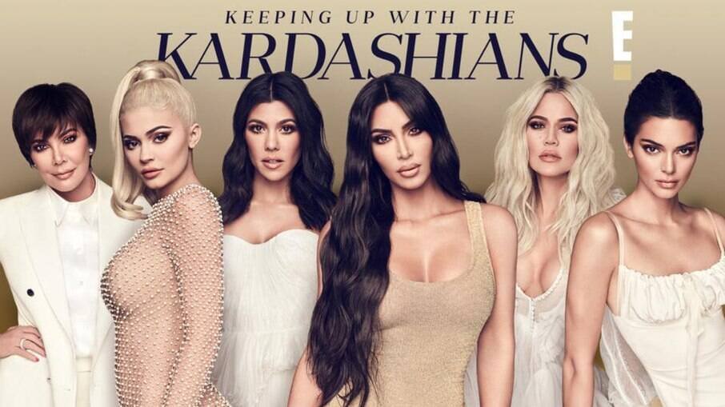

Um Pouco da Família Kardashian Jenner
Família Kardashian ou Família Kardashian-Jenner são parentes norte-americanos, que, ficaram mundialmente conhecidos pelo reality show Keeping Up with the Kardashians, estrelado por Kim Kardashian e transmitido pelo canal E!. Composta por Kim Kardashian, Kourtney Kardashian, Khloé Kardashian, Kylie Jenner, Kendall Jenner, Rob Kardashian, Robert Kardashian, Caintlyn Jenner,Kris Jenner entre outros.
Kris Jenner
Kristen Mary Houghton, nasceu em San Diego, no dia 5 de novembro de 1955, mais conhecida como Kris Jenner ou Kris Kardashian, é uma empresária, apresentadora, socialite e produtora americana. Ficou conhecida pelo reality Keeping Up with the Kardashians, que mostra a vida da Família Kardashian-Jenner. Ela é mãe de 5 mulheres e sendo a empresária de suas filhas Kourtney Kardashian, Kim Kardashian,Khloé Kardashian, Kendall Jenner e Kylie Jenner. Foi casada com o famoso e renomado advogado Robert Kardashian, tendo se divorciado em 1993, por dificuldades conjugais. Posteriormente foi casada com Bruce Jenner, que atualmente é a transexual e ex-campeã olímpica Caitlyn Jenner, de quem se divorciou em 2014.
Kourtney Kardashian
Kourtney Mary Kardashian é uma atriz, modelo, apresentadora, produtora, estilista e socialite nascida em 18 de abril de 1979 em Los Angeles,California,EUA. Kourtney tem três filhos, Mason Dash Disick nascido em 14 de dezembro de 2009, Penelope Scotland Disick, nascida em 8 de julho de 2012 e no dia 14 de dezembro de 2014 ela deu à luz mais um menino, Reign Aston Disick. Kourtney e Scott(pai de seus filhos)por nove anos. Que terminaram em 2015, mas atualmente Kourtney,está casada com Travis Barker que, começaram a namorar em janeiro de 2021.
Kim Kardashian
Kimberly Noel Kardashian é uma personalidade da mídia, modelo, influenciadora, empresária, socialite, estilista e produtora nascida em 21 de outubro de 1980 em Los Angeles,California,EUA. Kim Kardashian têm quatro filhos: North West (nascida em 15 de junho de 2013), Saint West (nascido em 5 de dezembro de 2015),Chicago West (nascida em 15 de janeiro de 2018),e Psalm West (nascido em 9 de maio de 2019).Kim já se casou 3 vezes,e no seu último casamento com Kanye West teve seus 4 filhos e recentemente Kim entrou com o processo de divórcio no começo de 2021 e, no começo de 2022 Kardashian conseguiu se divorciar de Kanye West.Kim atualmente está solteira.
Khloé Kardashian
Khloé Alexandra Kardashian é uma personalidade de televisão e da mídia, empresária, modelo,socialite apresentadora, instagrammer, escritora ,autora, digital influencer, atriz, produtora e estilista, nascida em 27 de junho de 1984 em Los Angeles, California,EUA. Khloé já foi casada com Lamar Odom de 2009 a 2016,depois ela teve um relacionamento que chegou ao fim em 2021 com Tristan Thompson e teve uma filha chamada True Thopson (nascida em 12 de abril de 2018).
Kendall Jenner
Kendall Nicole Jenner nascida em Los Angeles no dia 3 de novembro de 1995, é uma modelo, empresária e personalidade de televisão americana, conhecida pelo reality show Keeping Up with the Kardashians, que mostra o dia a dia da Família Kardashian, da qual a mesma faz parte. Kendall é filha da empresária multimilionária, Kris Jenner e da Ex-Atleta, Caitlyn Jenner (antigamente Bruce Jenner).Kendall nunca foi casada e não possui filhos até o momento.
Kylie Jenner
Kylie Kristen Jenner é uma empresária, socialite, modelo, influencer e personalidade da mídia nascida em 10 de agosto de 1997 em Los Angeles, California,EUA. Kylie tem dois filhos, Stormi Webster (nascida em 1 de fevereiro de 2018) e seu segundo filho, cujo o nome ainda não foi revelado (nascido em 2 de fevereiro de 2022 ),também com seu namorado Travis Scott.